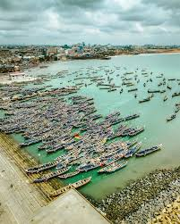
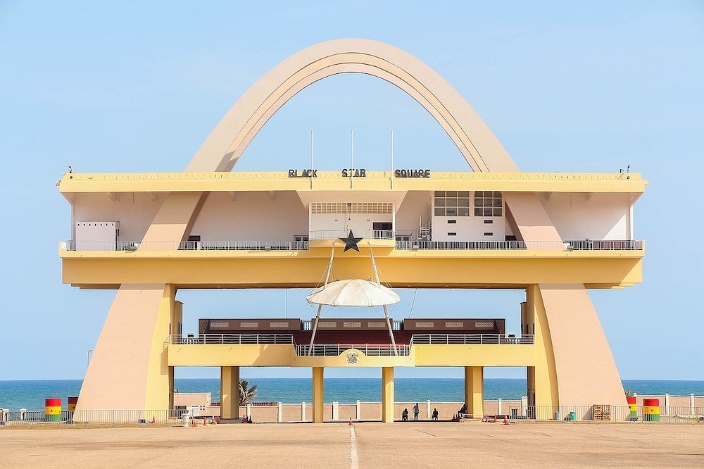
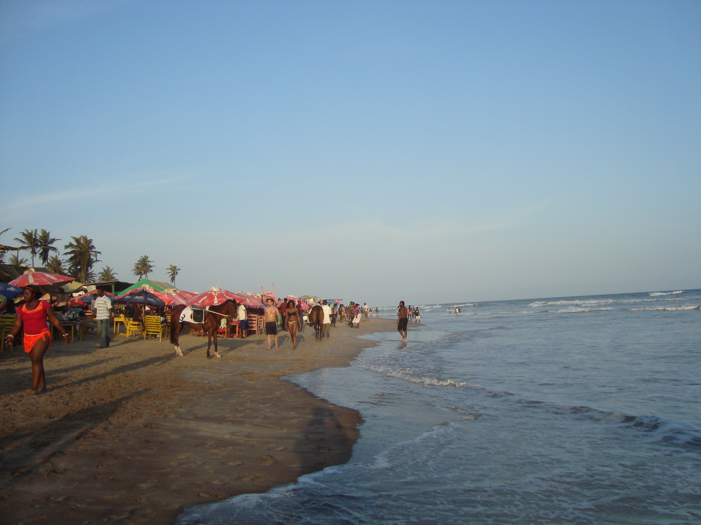
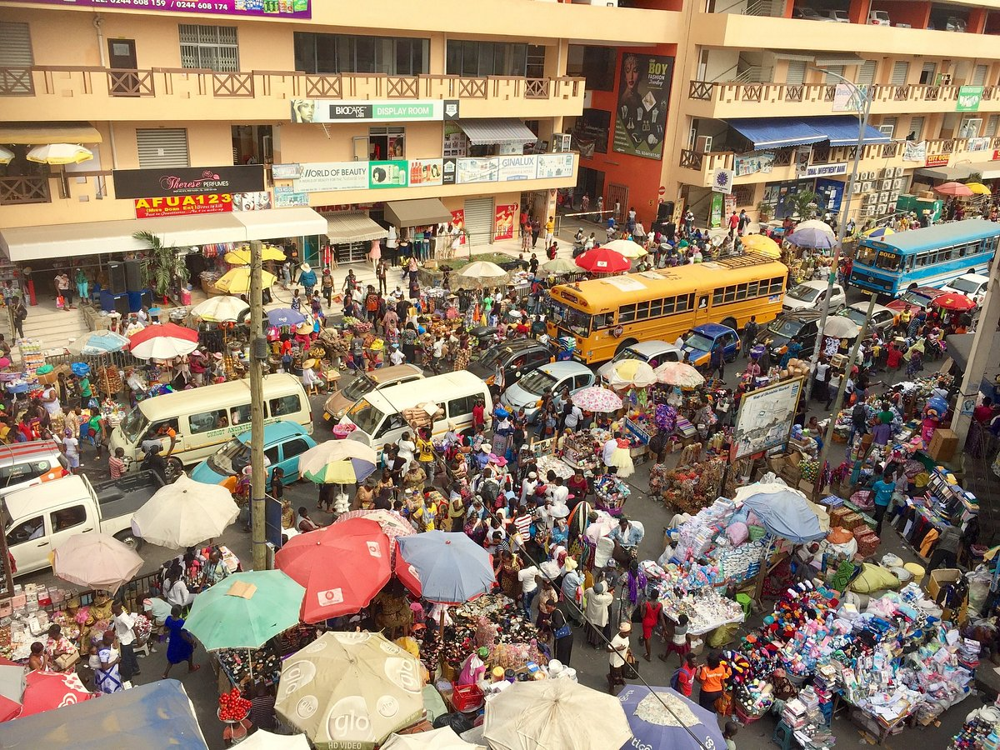
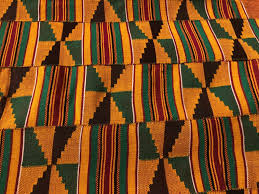

Accra in Photos
Nowhere in Accra is without color, music, and casual camaraderie. These images capture the city as it is,layered, proud, and completely alive.






Nowhere in Accra is without color, music, and casual camaraderie. These images capture the city as it is,layered, proud, and completely alive.




